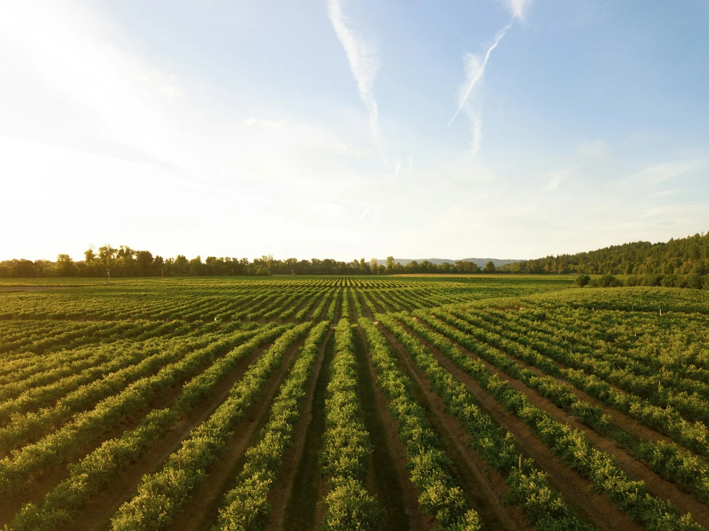
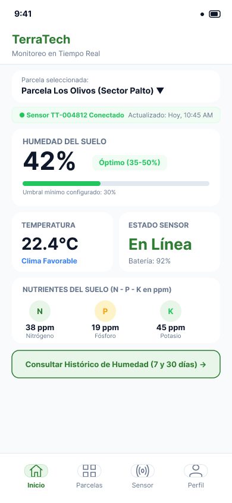

Sensor de Humedad
Consulta el porcentaje de humedad del suelo de tu parcela y la fecha de la última medición registrada por el sensor.
Gestiona tus parcelas y sensores, consulta humedad, temperatura y nutrientes, y revisa el histórico de humedad desde la app Android.
Tu parcela, sus mediciones y su historial en un solo lugar.


Conoce las mediciones que te ayudan a entender el estado del suelo de tu parcela.
Consulta el porcentaje de humedad del suelo de tu parcela y la fecha de la última medición registrada por el sensor.
Consulta los niveles de nitrógeno, fósforo y potasio del suelo en ppm para orientar la fertilización de tu parcela.
Consulta la temperatura del suelo en grados Celsius para evaluar el riesgo de heladas en tu parcela.
Todo lo que necesitas para gestionar tus parcelas y consultar la información del suelo desde una experiencia sencilla.
Crea tu cuenta y accede a la información de tus propias parcelas.
Consulta y actualiza tus datos personales y la información de tu terreno.
Asocia un dispositivo válido a tu parcela para consultar sus mediciones.
Elige la parcela que quieres consultar y revisa sus dispositivos asociados.
Consulta las últimas mediciones de humedad, temperatura y nutrientes, con su fecha de actualización.
Revisa la humedad de los últimos 7 o 30 días y el detalle de cada lectura.
Accede a parcelas, sensores y mediciones descargadas, sabiendo cuándo se actualizaron.
TerraTech conecta la información de tus sensores con una app Android. Elige una parcela, revisa sus mediciones y consulta cómo cambia la humedad a lo largo del tiempo.
Consulta los indicadores de tu parcela y la fecha de actualización de las mediciones.
Capturas originales de la app en español.
Conoce el plan Pro o conversemos sobre las necesidades de tu organización.
Para gestionar tus parcelas y consultar la información del suelo.
S/50al mes
Cuéntanos sobre tu organización y las necesidades de tus parcelas.
Conversemos
Contacta con nuestro equipo para conversar sobre las opciones de contratación.
Contactar con nosotrosSomos estudiantes de Ingeniería de Software que desarrollamos TerraTech para acercar la información del suelo a la experiencia del agricultor.
Requisitos y validación
Ingeniería de Software
Arquitectura de software
Ingeniería de Software
Presentación y documentación
Ingeniería de Software
Investigación y diseño móvil
Ingeniería de Software
Desarrollo de backend
Ingeniería de Software
Cuéntanos sobre tu parcela y explora cómo TerraTech puede ayudarte a consultar la información de tu suelo.
Información clara para tus decisiones en el campo.